C 端 AI 产品经理 · 0-1 可落地
把复杂 AI 能力，做成 普通用户愿意持续使用 的产品。
1 年+产品经验，主线是 C 端 AI 产品，兼顾 B 端复杂场景协同。正在推进 ChordFlow/ChordSnap：从用户访谈、产品定义到 MVP 联调与指标验证。
- AI 学习工具
- 音乐创作体验
- 用户增长链路
- B 端需求抽象
- 跨团队协同交付
Work Experience
工作经历
深信服科技股份有限公司 · 售前产品经理
2025.04 - 2026.04
围绕网络安全、AI、云计算核心产品线，负责苏州区域企业用户需求调研、方案设计与项目全流程落地。
- 全流程项目交付：主导苏州区域 20+ 中大企业信息化建设项目，覆盖需求调研、场景痛点分析、产品选型、POC 测试与验收交付；2026 年 Q1 助力部门整体业绩达成率 125%，超额完成目标。
- 需求体系建设：搭建新老用户需求沙盘，触达苏州企业用户 8000+，从企业体量分层、产品覆盖、触达途径多个维度持续开展行业洞察与竞品分析，从客户反馈中抽象出 AI 告警聚合、安全托管等共性需求，推动产品化落地，驱动商业推动战略规划和执行。
- 跨团队协同：联动研发、销售、合作代理商多部门完成产品落地交付，具备跨团队需求对齐与排期管理经验。
深圳万兴科技集团有限公司 · 视频产品经理
2024.06 - 2024.09
- 竞品调研：通过定性分析、定量数据分析等多种方法，为前台产品提供增长点数据支持赋能，输出竞品分析报告 10+，推动 3 个需求及 1 个产品立项（视频增强、TTS、视频长改短）。
- 产品策划：为解决中小团队创作微短剧审核量大、协同困难等问题，协助策划 2+ 个 AI 短剧 C 端审修一体化云端产品，被列入 A 级机会点。
- 产品迭代：针对在线视频产品的 AI 工具进行优化，协助产品经理处理需求 10+，优化用户体验流程。
- 数据分析：每日对 Media.IO 业务线各 SKU 商品使用及付费转换数据进行监控，以国家维度及单点钩子功能维度切入分析，累计收集 60+ 数据统计报告，依据数据提出营销及产品迭代策略，促进 PV 上升 1.79%，DAU 达 30w+。
深圳戴乐体感科技有限公司 · 乐器产品经理
2024.02 - 2024.06
负责智能吉他硬件及配套 APP 的用户研究与产品策划，服务吉他新手核心用户群体。
- 用户研究体系搭建：制定并搭建用户研究 SOP，综合运用可用性测试、A/B 测试、焦点小组、深度访谈等方法，搭建用户研究助手与可用性测试助手 Agent，系统整理 300+ 用户反馈，完成 50+ APP 及硬件可用性测试，为硬件迭代及功能开发提供充足数据支持。
- 数据驱动迭代：基于用户研究数据驱动产品迭代，推动上线首月退货率下降 12.4%，帮助市场部锁定无痛吉他需求新手为核心用户，上品两个月购买率同比增长 9.8%。
- 产品策划：独立负责硬件架子鼓 APP 引导识别教学功能的产品策划，并参与策划 APP 2.7.0 的吉他教学功能模块设计，完成从 0-1 的方案落地，并协助搭建基础教学曲谱库 20+。
Featured Work
代表项目
C 端 · 在研
ChordFlow 像素乐理助手
围绕“歌单学乐理 + 无痛哼唱创作”构建最小闭环。
C 端 · 实习项目
Media.io AI 工具长改短 5.0
围绕 URL 分享链路做流程减法，提升导出完成率与生成效率。
C 端 · 已上线
AeroBand 教学模块
用用户研究驱动教学功能迭代与退货率改善。
B 端 · 标杆项目
天孚光通信 AI 安全方案
需求拆解、指标定义、跨团队推进到中标交付。
B 端 · 规模化交付
益而益远程办公安全项目
多认证源打通与 OAuth2 定制，最终部署 1400+ 点位。
B 端 · AI 基建平台
苏州大学算力资源池平台
整合异构 GPU 与云管平台，支撑校内统一算力调度。
B 端 · 基础设施优化
波特尼私有云承载与存储项目
存算分离与资源解耦，提升可靠性与扩容能力。
Selected Works
摄影与 3D 作品
从人像、风景到 3D 视觉，我用镜头和空间语言表达同一件事：让情绪与结构同时成立。
Qingdao Coastline
Urban Light
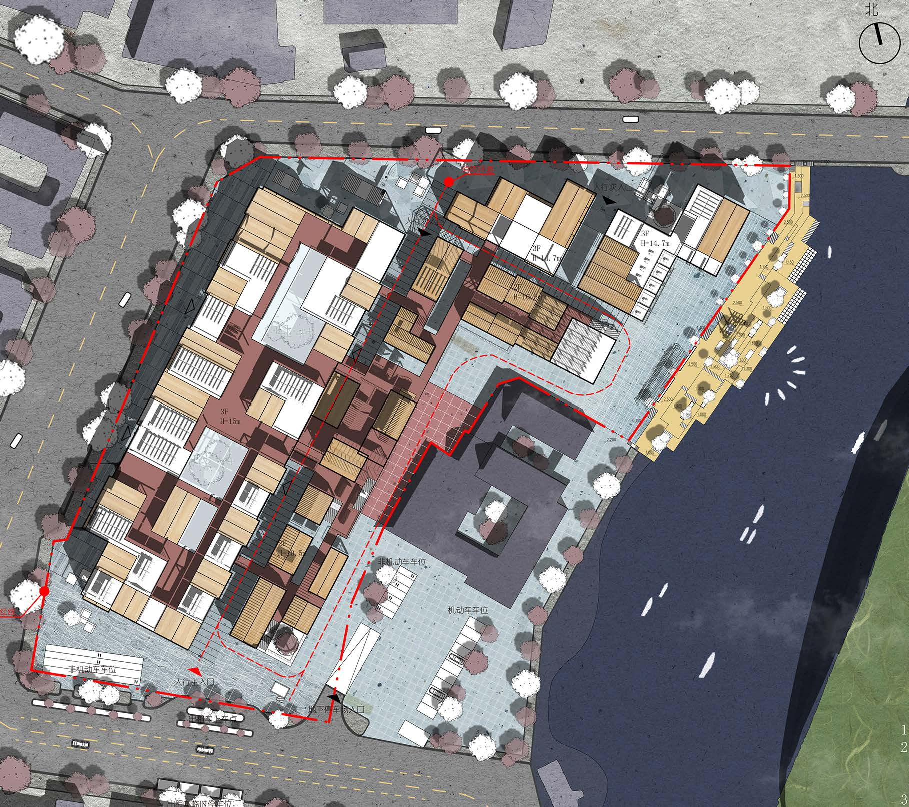
Spatial Mood Study
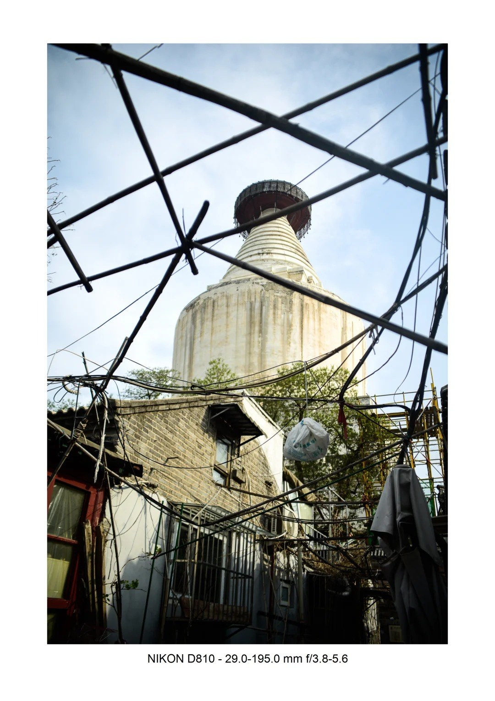
Beijing Archive
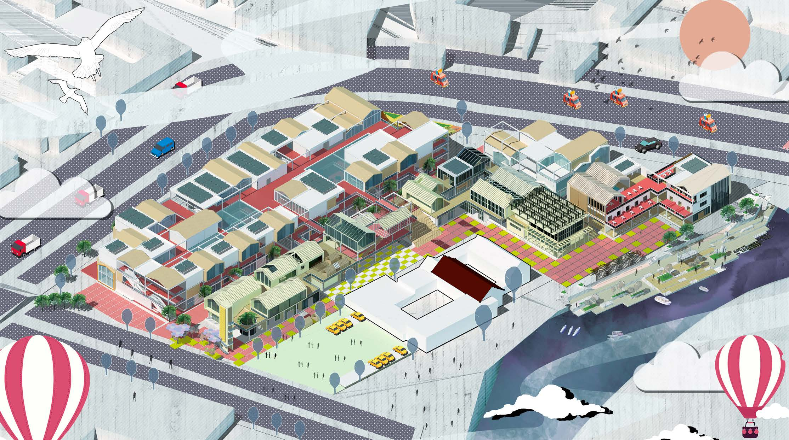
Material & Light
Natural Profile
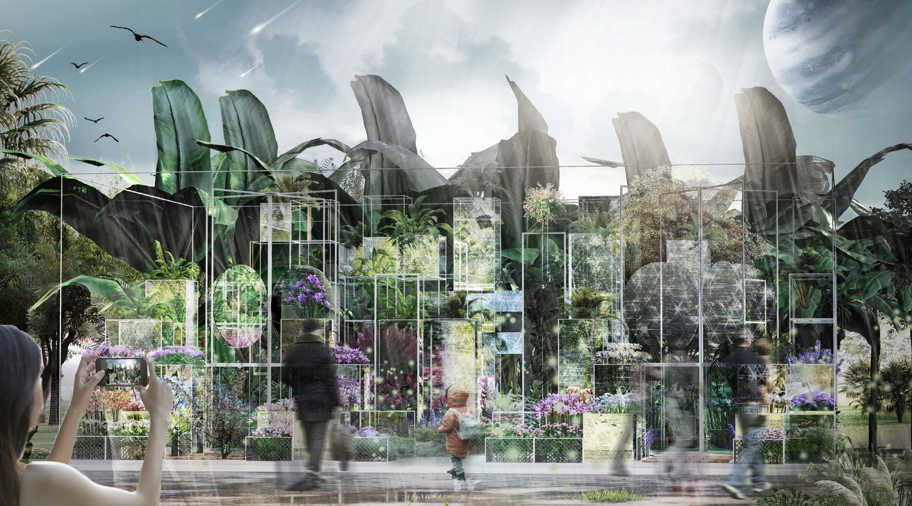
Concept Rendering
Frame of Emotion
Blue Sequence
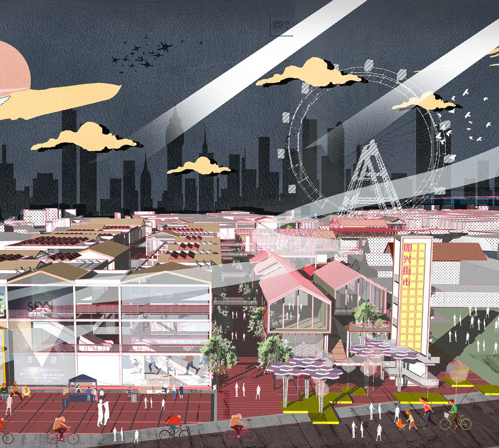
Atmosphere Build
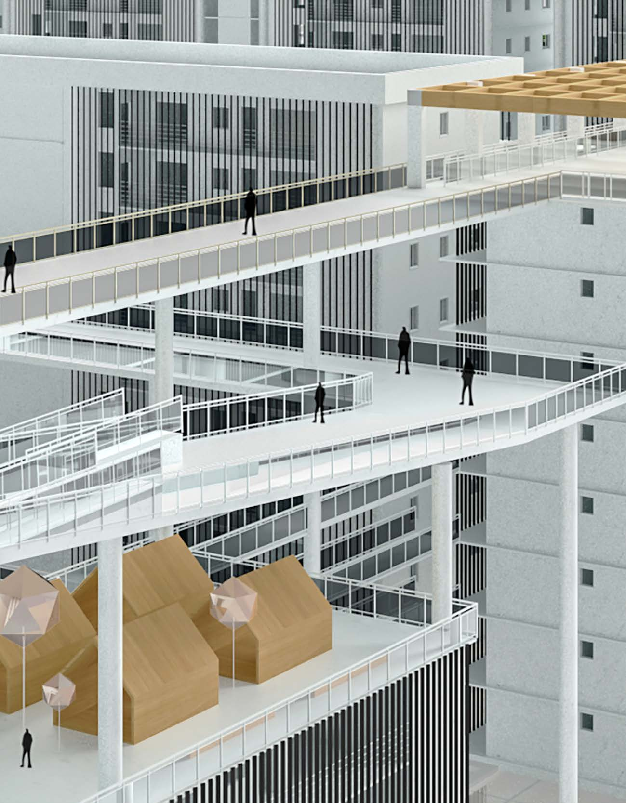
Facade Perspective
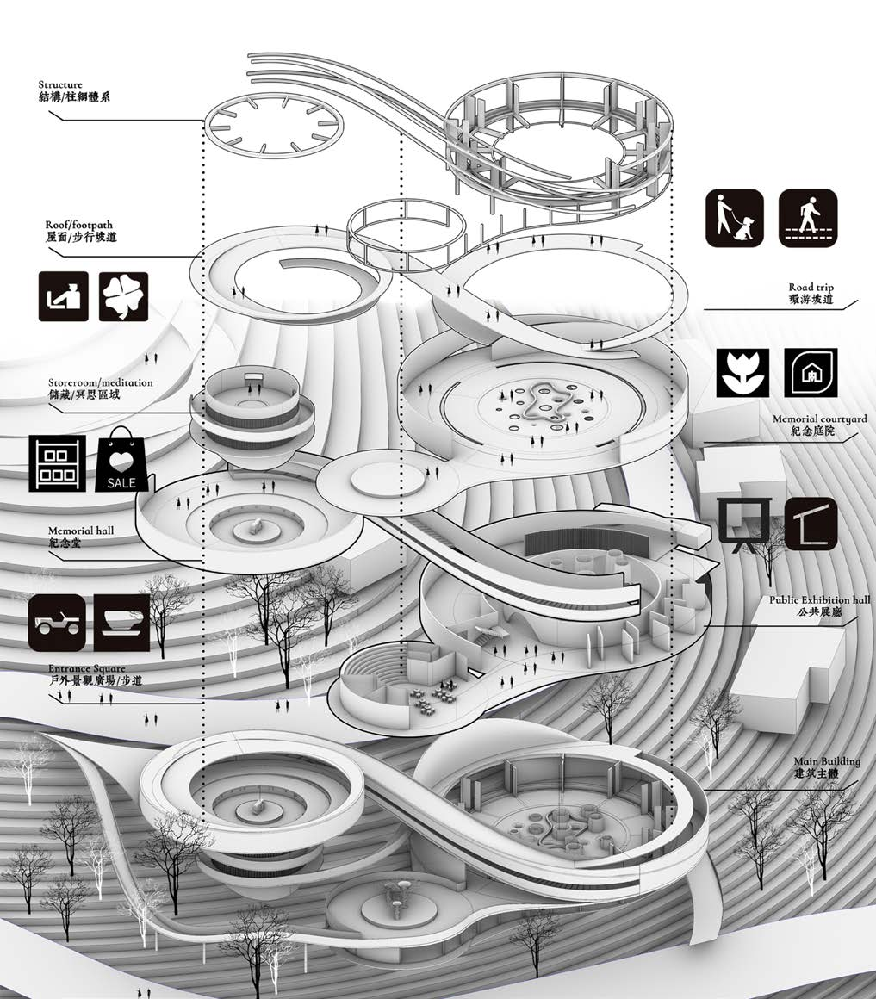
Public Space View
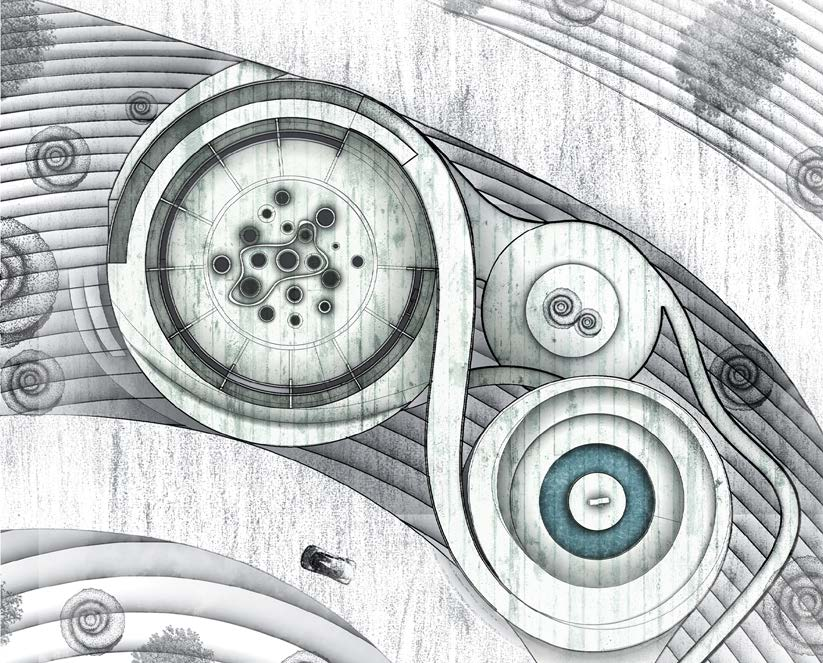
Context Integration
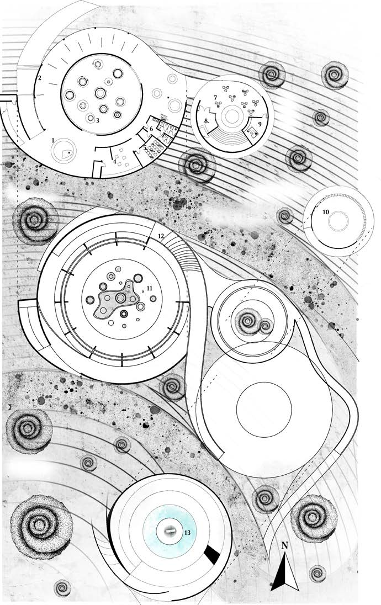
Massing & Volume
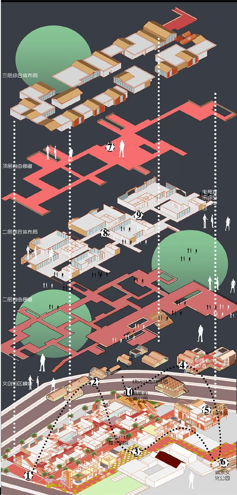
Street-Level Scene
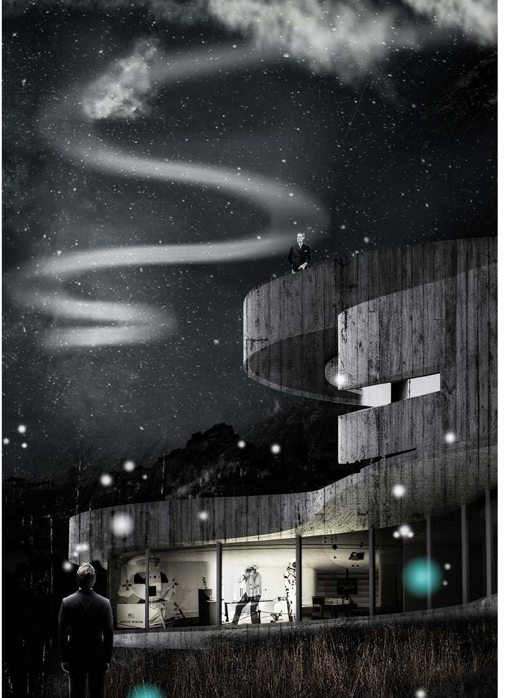
Night Exterior
Moment Study
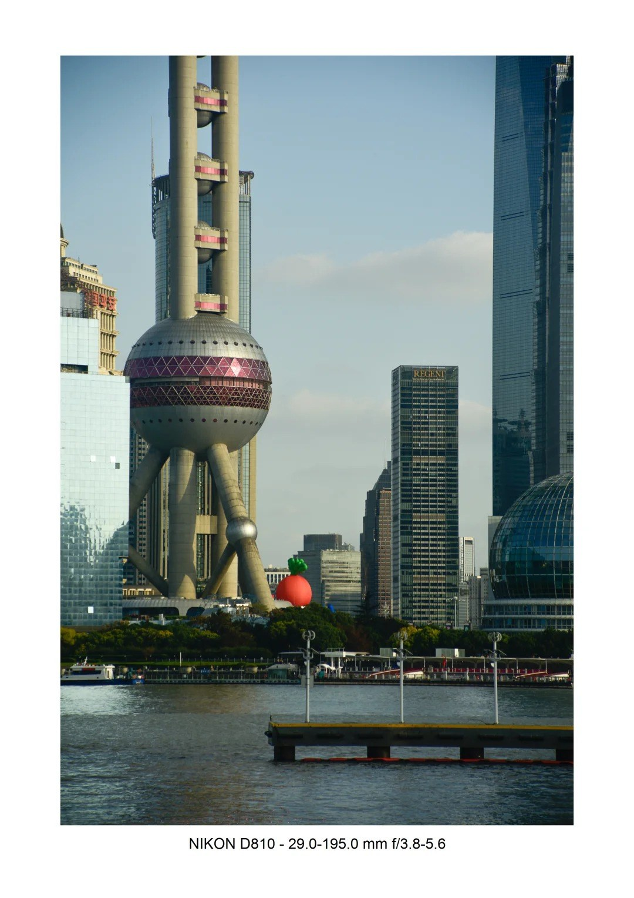
Travel Frames
Process Timeline
我的做事流程
-
01 访谈与洞察
先抓真实用户问题，不靠想象做需求。
-
02 主链路定义
只做最关键场景，保证第一版可验证。
-
03 MVP 联调
产品、前后端、模型接口按验收指标推进。
-
04 数据复盘
围绕准确率、满意度、留存等指标迭代。
-
05 持续产品化
把可用功能延展成可增长、可商业化能力。
Value Props
为什么我适合 AI 产品岗
用户感知强
能从访谈里提炼真实痛点，不做伪需求。
产品到交付闭环
不是只写文档，能推进到可上线版本。
AI 场景化表达
把模型能力翻译成用户听得懂、愿意用的功能。
跨团队推进
能在研发、业务、交付之间对齐节奏和目标。
兼具 C/B 视角
C 端关注体验，B 端关注结果，能在两侧切换。
快速试错
先做最小可验证版本，再用数据做下一步。
Let’s Talk
正在寻找：C 端 AI 产品经理机会
也可承接 B 端 AI 应用产品。欢迎联系我聊业务场景和岗位目标。
邮箱：1158043506@qq.com
微信：ZF15277148665
城市：深圳 / 广州